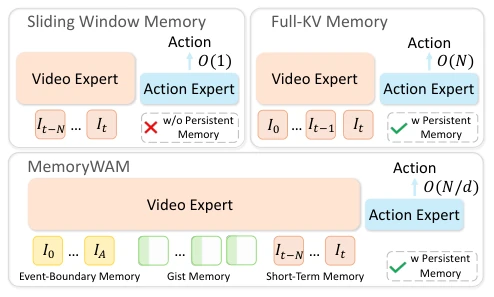
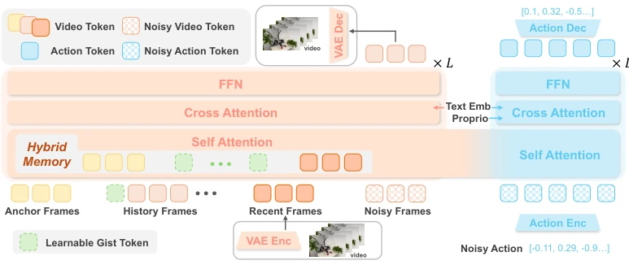

This paper prescribes a remedy for WAM's "memory anxiety". Existing WAMs either remember only the last few seconds like goldfish (FastWAM [14]), or store full history like a hard drive, causing inference to become unbearably slow (LingBot-VA [7]). MemoryWAM employs a "hybrid memory," directly mapping human memory mechanisms onto Transformers, using gist tokens to compress history and anchor frames to retain the beginning. Consequently, it indeed outperforms on RMBench [1], with efficiency also improved. However, directly mapping psychological concepts onto KV cache, isn't it somewhat "pseudo-cognition"? Moreover, can the semantic understanding shortcoming of the video diffusion model itself be compensated for solely by memory mechanisms? In short, on long-range tasks, this scheme is smarter than pure brute-force caching, but still far from true "intelligence".
The core difficulty of embodied intelligence lies in decision-making under non-Markovian environments, requiring memory. Existing VLA models (such as π0 [4]) typically only map current observations, lacking historical memory, leading to failure when task-relevant clues are occluded or delayed. WAM attempts to solve this through joint modeling of visual lookahead and actions, but faces fundamental efficiency trade-offs. Efficient methods such as Cosmos Policy [12] or FastWAM [14] rely on fixed windows, losing long-range context; while methods retaining full history such as LingBot-VA [7] or DreamZero [11], their KV cache overhead grows linearly with sequence length $N$ ($O(N)$), inference latency and memory usage are too high, making them impractical. Human memory is a hybrid system (short-term, long-term, event boundaries), which inspired the authors to propose MemoryWAM, aiming to break the Pareto frontier of efficiency and performance.

Figure 1: Overview. Prior WAMs typically face a memory-efficiency trade-off: sliding-window memory is efficient but forgets long-range context, while full-history KV caching preserves context but scales linearly with trajectory length N. MemoryWAM instead introduces hybrid memory: recent frames for
MemoryWAM is based on the MoT architecture, containing Video DiT and Action DiT. During inference, Video DiT runs only once to update the KV cache, and Action DiT denoises based on the cache to generate actions. The core innovation lies in the hybrid memory design: 1) Short-term memory: retains high-fidelity video latents of the most recent $N_{recent}$ frames for closed-loop control; 2) Event boundary memory: retains the initial $N_{init}$ frames of the task as anchor frames, recording key scene states; 3) Long-term memory: attaches $M$ learnable gist tokens per frame to compress history, replacing the original $L$ visual tokens. Through attention masking, subsequent frames only attend to gist tokens rather than original frames, reducing long-range cache complexity from $O(N)$ to $O(N/d)$. During training, video prediction provides dynamic supervision, but during inference, video is not generated, only video latents are used to update the cache. This design allows the model to retain persistent context while significantly reducing memory and latency.

Figure 2: MemoryWAM adopts an MoT architecture with a video DiT and an action DiT. Video prediction provides dense supervision of dynamics modeling during training and is not required during inference. For persistent memory, MemoryWAM preserves tokens from initial anchor frames and recent frames, an
On the RMBench [1] simulation benchmark, MemoryWAM compared VLA (π0.5 [4], FastWAM [14]) and WAM (LingBot-VA [7]). Results show that baselines relying on short windows have extremely low success rates (average 10.4%), while full-history LingBot-VA reached 78.2% but at high cost. MemoryWAM surpassed LingBot-VA with an average success rate of 83.0%, and performed better on tasks such as Press Button. In real-world experiments (ARX robot), on Shell Game and Look and Press tasks, MemoryWAM success rates were 18/20 and 15/20 respectively, superior to LingBot-VA (13/20, 14/20), and with lower inference latency. Ablation studies show that removing gist tokens leads to a significant performance drop, proving long-range compressed memory is crucial.